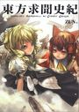
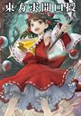
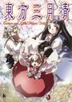
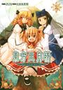
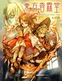
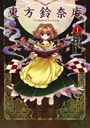
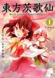

东方求闻史纪 ～Perfect Memento in Strict Sense

东方求闻口授 ～ Symposium of Post-mysticism

东方紫香花 ～Seasonal Dream Vision～
东方三月精 ～ Eastern and Little Nature Deity

东方三月精 ～ Strange and Bright Nature Deity

东方三月精 ～ Oriental Sacred Place
东方三月精 ～ Visionary Fairies in Shrine
東方香霖堂～Curiosities of Lotus Asia

东方铃奈庵 ～ Forbidden Scrollery

东方茨歌仙 ～ Wild and Horned Hermit
